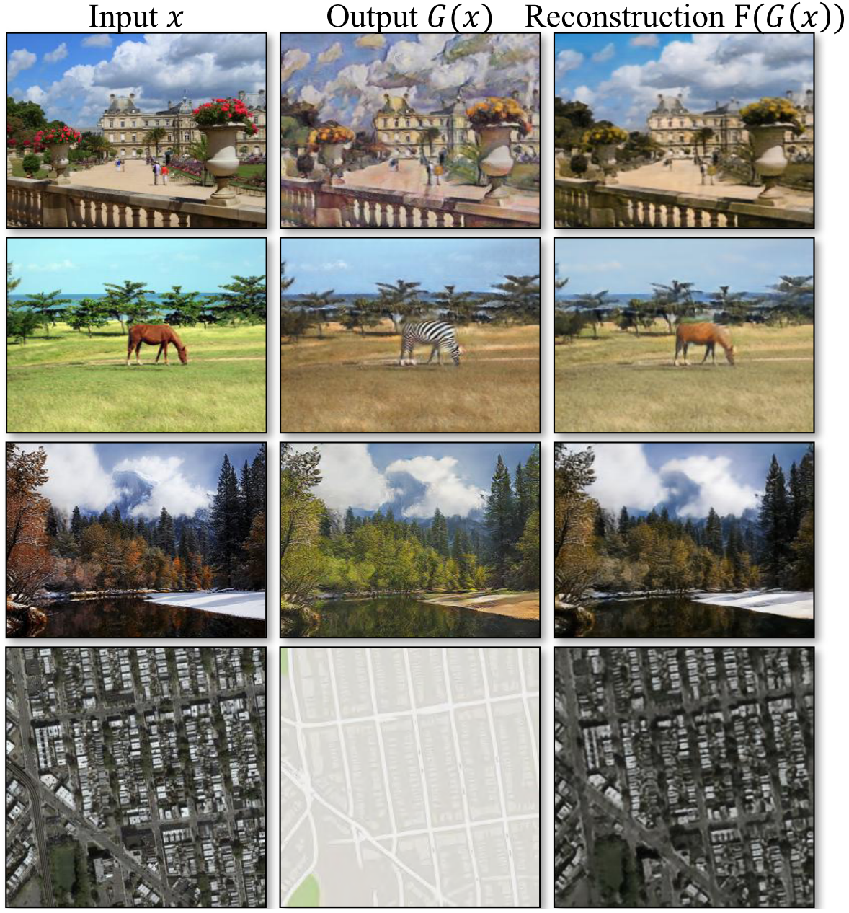
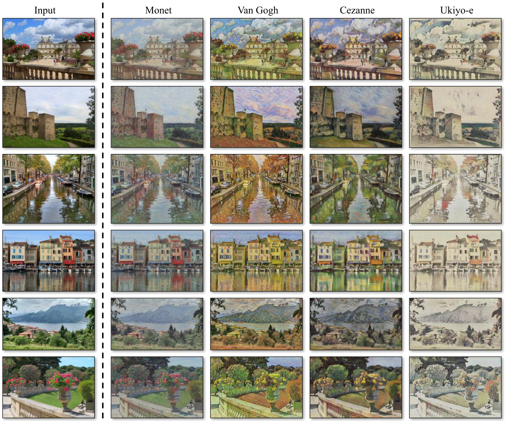
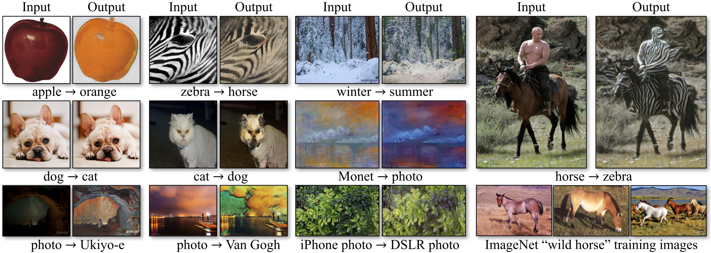

Unpaired Image-to-Image Translation Using Cycle-Consistent Adversarial Networks¶
In this work, the authors present an approach for learning to translate an image from a source domain \(X\) to a target domain \(Y\) in the absence of paired examples \(\{x_i, y_i\}_{i=1}^N\). The goal is to learn a mapping \(G: X \to Y\) such that \(G(X)\) is indistinguishable from \(Y\). Because this mapping is highly under-constrained, they couple it with an inverse mapping \(F: Y \to X\) and introduce a cycle consistency loss to enforce \(F(G(X)) \approx X\), and vice versa.
Adversarial Loss¶
For the mapping function \(G: X \to Y\) and its discriminator \(D_Y\), the objective is expressed as:
A similar adversarial loss is applied for the mapping function \(F: Y \to X\).
Cycle Consistency Loss¶
Adversarial losses alone cannot guarantee that the learned function can map an individual input \(x_i\) to a desired output \(y_i\). To further reduce the space of possible mapping functions, the authors argue that the learned mapping functions should be cycle-consistent: for each image \(x\) from domain \(X\), the image translation cycle should be able to bring \(x\) back to the original image, i.e., \(x \to G(x) \to F(G(x)) \approx x\). This is called forward cycle consistency, and we have backward cycle consistency: \(y \to F(y) \to G(F(y)) \approx y\). The cycle consistency loss is given by
The full objective is then:
{kind=link}
Experiment Results¶
During training, the authors follow the strategy in ** and update the discriminator using a history of generated images rather than the ones produced by the latest generators.
  {kind=link}
{kind=link}
Thoughts¶
This architecture is tailored for good performance on the appearance changes, with little success on geometric changes.